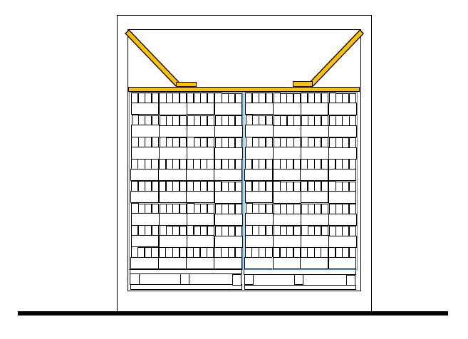
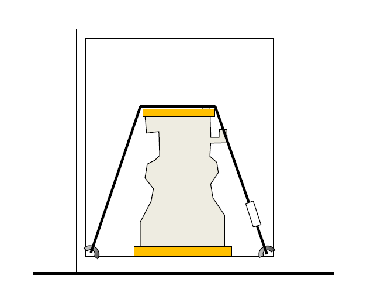
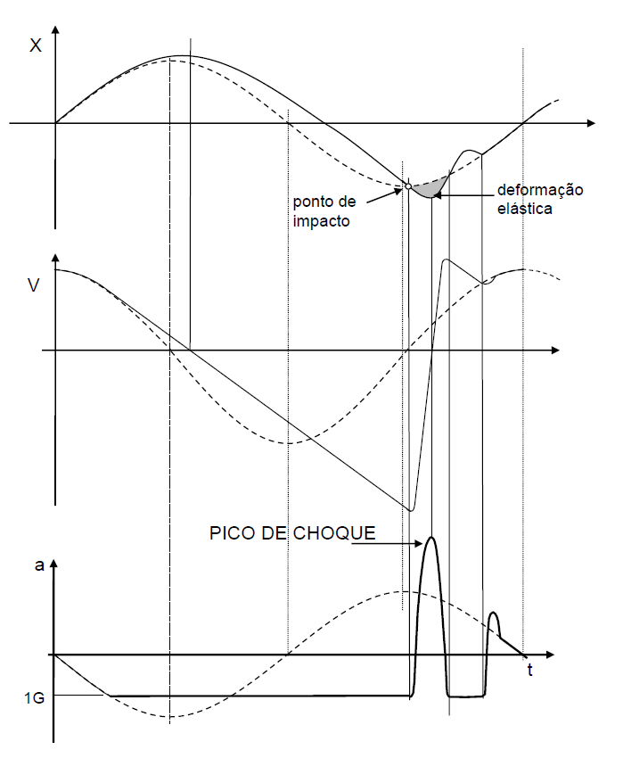
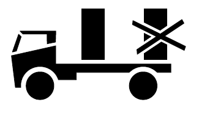

São duas as possibilidades: movimentação por manuseio ou movimentação mecanizada.
No manuseio, o primeiro problema é o limite de peso que uma pessoa pode carregar. Um limite de 60kg é definido pelo
Artigo 198 da Consolidação das Leis do Trabalho (se a legislação fosse mais moderna e científica, não mediria o peso em
kg, mas em daN). A Recomendação 128 da Organização Internacional do Trabalho, da ONU, propõe um limite de 55kg mas
estabelece que não pode ser permitido a nenhum trabalhador que realize transporte manual de carga com peso que possa
comprometer sua saúde e segurança
. O National Institute for Occupational Safety and Health
(NIOSH), dos EUA, limita a
carga em 23kg. Certamente que o número de movimentações, as distâncias e dificuldades de percurso devem ser consideradas
no estabelecimento do limite. O Ministério do Trabalho e Emprego estabelece, pela NR 11, a distância máxima de 60m para
o transporte manual de cargas com peso, pela NR17, dentro da limitação definida pela OIT. Muitas empresas têm suas
normas internas, principalmente levando em conta o tipo de trabalhador (feminino, por exemplo), baixando para 13 ou 16kg
esse limite.
As embalagens devem ter dispositivos, como alças, saliências, reentrâncias ou aberturas, que permitam uma preensão segura pelas mãos, até evitando o amassamento dos dedos. A posição desses dispositivos deve ser equilibrada em relação ao centro de gravidade da embalagem e o número dos mesmos deve induzir a que a movimentação seja feita por duas (ou mais) pessoas, para maior peso ou dimensão.
Os esforços a que a embalagem fica sujeita, no manuseio, são os de levantamento e os de impactos devidos a quedas. Eventualmente, pode haver um esforço e desgaste por arrastamento. Um dos testes a que a embalagem deve ser submetida, em seu desenvolvimento e eventual certificação, é o de levantamento, que permite verificar se o fundo se abre ou se as alças têm resistência adequada, por exemplo. A norma NBR 9476 (ou IPT-NEA 05 MT) estabelece um procedimento para esse teste. No manuseio podem ocorrer quedas operacionais e acidentais. As operacionais são pequenas quedas, esperáveis e repetitivas. As quedas acidentais também devem ser testadas no desenvolvimento da embalagem, sendo mais ou menos severas dependendo do nível de proteção que se pretenda dar ao produto embalado e à própria embalagem. A NBR 9460 estabelece três níveis de severidade (além dos especiais para produtos perigosos) e posições de impacto, em função da forma de manuseio (em geral, função do peso). Para produtos perigosos, as normas da ONU estabelecem testes com quedas de 80, 120, 180 e 900cm, dependendo do nível e tipo de periculosidade.
A movimentação mecanizada pode ser feita por equipamentos simples, não motorizados, como carrinhos de diversos tipos, alavancas com rodízios, garfos rodantes (paleteiras), talhas manuais. O IPT desenvolveu e patenteou, por exemplo, um carrinho de duas rodas dotado de braço para içamento por pequenas talhas, combinando, assim, a possibilidade de movimentos no piso com o levantamento para embarque e desembarque de veículos e embarcações, para cargas de até cerca de 200kg.
A movimentação mecanizada de cargas maiores normalmente usa equipamentos motorizados que dão apoio à embalagem por meio de garfo ou operam por içamento. Os esforços provocados pelo peso nos apoios ou pontos de içamento são multiplicados por acelerações, principalmente as de frenagem na descida (que pode chegar a 1,4 vezes o peso — fator dinâmico μ = 1,4 segundo N. Rudenko, Máquinas de elevação e transporte — Livros Técnicos e Científicos Editora S.A.). Sempre é importante lembrar que os esforços de içamento dependem do ângulo dos cabos aplicados à embalagem (Figura). Quanto maior o ângulo α, menor será a força sobre a embalagem envolvida pelo estropo.
Na movimentação por garfo ou por cabos ou barras lingadas (trapézios) que devem passar sob a embalagem, é importante que esta possua pontos apropriados de apoio, afastados do solo por meio de espaçadores. Para a entrada de garfo rolante é necessário que este afastamento tenha cerca de 100mm. Para a entrada de garfo de empilhadeira ou cabos (estropos) ou barras, bastam cerca de 70mm. Os apoios da embalagem ao piso devem estar afastados das extremidades da base (Figura), de pelo menos 70mm.

Os apoios devem ser, assim, apropriados não apenas quanto à geometria, mas também quanto à resistência. Grandes caixas ou engradados de madeira, por exemplo, podem ter reforços de chapa de aço nos pontos de passagem de cabos. O içamento de grandes embalagens, como máquinas pesadas, por exemplo, deve ser feito através de olhais fixados ao produto embalado. Para isso, a embalagem deve ter pontos de passagem dos cabos que não constituam aberturas que possam comprometer a estanqueidade de envolvimentos contra a umidade, por exemplo.
Na movimentação por arrastamento, como na introdução de uma carga pesada no fundo de um contêiner, a base da embalagem deve ter caibros deslizadores com as pontas chanfradas e com pontos de apoio do garfo ou dispositivo de empurramento e de passagem do cabo de puxamento (para a retirada do contêiner). Estes caibros ou vigas de arrasto podem ser encerados para redução do atrito. O arrastamento de caixas ou bombonas plásticas (mais associado à movimentação manual) provoca desgaste no fundo da embalagem, que pode comprometer a segurança. A movimentação por rolamento, comum no transporte aéreo, exige que a base da embalagem seja resistente e plana para se apoiar sobre roletes ou rodízios fixos no solo ou nos equipamentos.
A movimentação por garfo rodante (paleteira é o termo usual, mas registrado) de cargas paletizadas, por exemplo, em pequenos mercados, mesmo em pisos imperfeitos e com pequenas inclinações, o que é difícil com o palete normal, exige o conceito de “meio-palete” (que será tratado adiante, no artigo sobre Dimensionamento). Um desenvolvimento desse conceito é o “mini-palete”, movimentado por carrinho manual de duas rodas. Estudamos e patenteamos (no IPT) a idéia de movimentar esse carrinho por içamento, para facilitar o carregamento de caminhões e pequenas embarcações com unidades de carga de até 250daN. Esse sistema foi criado em projetos para a ONUDI em Cuba e na Tailândia, visando a movimentação rápida de pequenas cargas, para minimizar o tempo de caminhão ou barco parado.

Interessam, para o projeto da embalagem logística, dois aspectos principais do armazenamento: o climático (associado ao tempo de duração do armazenamento) e o estrutural (associado às formas de empilhamento).
A embalagem pode ser projetada para ficar ao tempo, sob sol e chuva, ou para ficar em ambiente condicionado, com temperatura e umidade controladas. Tais condições precisam ser conhecidas a priori. Existem testes simulativos das condições climáticas — de chuva, por exemplo (NBR 9467) — que permitem verificar a adequação da embalagem. A ventilação pode ser importante, exigindo embalagens com aberturas e posições adequadas de empilhamento, quando se trata de retirar o calor ou gases do produto, como no caso de hortifrutícolas. A ventilação pode ser de baixo para cima, aproveitando a convecção natural, ou de um lado para outro.
A condição estrutural está ligada à altura de empilhamento. Dependendo do material da embalagem, a condição climática também afeta a resistência estrutural (caixas de papelão sob umidade), assim como o tempo de empilhamento. Para caixas de papelão, como os fatores climáticos e de tempo são muitas vezes imprevisíveis, assim como a qualidade do empilhamento (linearidade ou irregularidade), usa-se, normalmente, trabalhar com a carga estática calculada de empilhamento multiplicada por um fator de segurança 2, quando os testes de desenvolvimento ou controle da qualidade são feitos com umidade de 65% e são de pequena duração. Mais detalhes sobre isso serão vistos em Dimensionamento estrutural. Além da resistência ao empilhamento, é preciso ter um certo cuidado com a estabilidade de pilhas, quando estas são muito altas, ou as embalagens estreitas, ou o piso irregular, ou existe algum risco de ações externas (vento, movimentações). A duração do armazenamento vai afetar o dimensionamento das proteções, especialmente contra umidade e corrosão, portanto é importante alguma previsão.
Modernas formas de armazenamento exigem embalagens logísticas com identificadores, como códigos de barra para leitura à distância ou transponders para localização. No armazenamento é preciso ter cuidado com possíveis ataques biológicos (fungos, insetos, roedores) e com riscos de incêndio, inundações, tempestades.
Geralmente, as condições mais críticas a serem enfrentadas pela embalagem logística estão no transporte. Podem ser condições dimensionais, climáticas e mecânicas, a serem estudadas.
Cada modo de transporte tem suas limitações dimensionais e de capacidade de carga dos equipamentos. O problema é maior, ou mais definido, no contêiner (que é intermodal), no caminhão e nos contentores aéreos.
O contêiner usual, de carga geral, tem largura interna de 2330mm a cerca de 2350mm, altura interna mínima de 2197mm ou 2350mm e comprimento mínimo de 5967mm (comprimento nominal de 6m) ou de 11998mm (comprimento nominal de 12m). O dimensionamento da embalagem deve prever alguma folga para movimentação, desalinhamento ou abaulamento. Uma folga de 10cm na altura é aconselhável, para a movimentação e afastamento térmico do teto.
A largura do caminhão é o grande problema, mas este fica amarrado pela definição de unidades de carga padrão. Nos anos 70, no IPT, defendíamos uma unidade de carga padronizada conforme a ISO, de 1140 x 1140mm. É perfeitamente adequada ao contêiner. Tem uma série de vantagens: o palete quadrado admite maior variedade de dimensões de embalagens em comparação com o palete retangular. Dá mais possibilidades de apoio cruzado das caixas empilhadas. É mais adequado a quatro tambores. É mais barato. Tem maior estabilidade e melhor apoio no garfo. O palete retangular, por outro lado, tem uma única vantagem: é retangular. Isso permite que possa ser usado em caminhões mais largos e mais estreitos, onde o palete quadrado não caberia. O Eng. Horst Müller Carioba, no CB5 da ABNT (na década de 1980), explicou-nos a necessidade de se ter caminhões mais largos, rodoviários, e mais estreitos, urbanos. Essa necessidade — e apenas essa — justifica um padrão retangular para o palete, de 1200 x 1000mm, que seria a outra medida da ISO (uma terceira medida da ISO, de 800 x 1200mm, tende a ser obsoleta). Os veículos urbanos têm largura igual à do contêiner, mas há veículos menores (como os VUC e VLC, em São Paulo, únicos admitidos em certas áreas da cidade) que têm largura externa de 2200mm, portanto a largura interna só admite dois paletes com 1000mm de largura.
Ao tratarmos, adiante, do Dimensionamento geométrico da embalagem, estudaremos mais em detalhe essa questão.
O caminhão apresenta, ainda, a limitação de carga definida pelo Decreto-Lei Nº 117/67, que pode ser uma limitação para o dimensionamento de embalagens logísticas. Quando se lida com cargas pesadas, fracionadas e embaladas, é importante conhecer, a priori, a capacidade do caminhão a ser usado, para seu máximo aproveitamento com unidades de carga bem dimensionadas. O contêiner também tem limites de peso máximo admissível, mas o mais crítico é a carga por eixo rodoviário.
A limitação de carga de caminhões usuais é de 1000daN/m2.
Outra limitação dimensional importante é a de contentores aéreos (ULD) normalizados pela IATA. A IATA também normaliza dimensões preferenciais de embalagens pertencentes ao usuário (e não ao transportador aéreo). Como essas dimensões são frequentemente revisadas, convém que sejam consultadas com o transportador aéreo previsto, ou na Internet: IATA ULD dimensions. Por isso, não vamos reproduzir aqui as dimensões dadas em nossa publicação do IPT. Alguns contentores aéreos apresentam a complicação de ter um formato de paralelepípedo chanfrado, o que dificulta o dimensionamento e arranjo das embalagens.
Outro problema de dimensionamento no transporte refere-se à freqüente necessidade de transportar caixas vazias, na entrega ou em retorno. O que fazer para que ocupem menos espaço? Podem ser usados sistemas de caixas ou engradados desmontáveis. Podem ser usadas caixas tronco-piramidais, que se encaixam, parcialmente, uma dentro de outra. Podem ser dimensionadas caixas que caibam uma ou duas dentro de outras duas. No artigo sobre dimensionamento das embalagens voltaremos a esse problema.
As condições climáticas são outro problema sério em transportes. Em um contêiner de cor escura, exposto ao sol tropical, a temperatura pode chegar a cerca de 80°C. Por outro lado, a temperatura pode atingir níveis muito baixos no inverno em países frios ou em aviões não aquecidos, podendo chegar a cerca de —40°C. Uma condição típica do avião é a temperatura entre 2 a 18°C e umidade de 20%. Outro problema é a variação brusca de temperatura, típica do transporte aéreo, que pode danificar certos produtos que suportariam bem temperaturas altas ou baixas, mas não sua variação brusca. A umidade é um dos principais causadores de danos à carga em transporte. A atmosfera num contêiner, ou num caminhão ou vagão, ou no porão do navio, ou sob uma lona sem ventilação, chega à umidade relativa de 100% (saturação com condensação). Variações de temperatura levam à condensação, principalmente no teto, provocando uma verdadeira chuva dentro do contêiner.
No gráfico abaixo (diagrama de Mollier, retirado do Google, válido para o nível do mar) pode-se observar a variação da umidade relativa com a temperatura.

Supondo, por exemplo, que o contêiner tenha 30m3 de ar e admitindo que 1m3 de ar tem massa de 1kg (nível do mar), e que esse ar contém inicialmente 25g de vapor d'água por kg de ar (temperatura de 31°C e umidade relativa de 85%), ao ser baixada a temperatura para 14°C, do dia para a noite, serão condensadas 450g de água (15gágua/kgar x 30kgar). Isso, de fato, não é muito, mas se houver outras fontes de água, como madeira úmida, umidade do próprio produto ou infiltrações no contêiner, a quantidade de água será muito maior. A água condensada e a atmosfera saturada de vapor d'água poderão causar a proliferação de fungos, corrosão e molhamento.
Cargas frias, como as que são retiradas do avião, colocadas em ambiente quente e úmido, vão ser molhadas por condensação superficial. Um fator de agravamento da presença de umidade no contêiner, ou na embalagem, é a presença de madeira, como a de paletes ou berços de máquinas. Sabe-se que o correto é trabalhar com madeira seca, mas na prática essa secagem raramente é feita. Vamos ver, adiante, o que é o teor de umidade da madeira, bastando agora entender que se pode ter, em uma tábua, mais água que madeira.
Outra causa de molhamento é a exposição à chuva. O transporte em caminhões com cobertura de lona pode ser problemático, seja pela demora na colocação da lona ao começar a chover, seja pela existência de furos na lona. Na descarga do avião é possível que a carga fique exposta à chuva. A exigência econômica de minimização do tempo de avião parado faz com que as operações de carga e descarga prossigam mesmo sob chuva. O certo é que a carga seja, então, coberta por uma lona ou plástico impermeável, mas isso nem sempre é muito bem feito, pois os operadores aeroportuários, como a INFRAERO, também têm pressa.
A pressão atmosférica pode ser um problema, se muito alta ou se muito baixa. Tambores de aço de paredes finas transportados de um lugar alto para o nível do mar podem sofrer um amassamento por implosão. A baixa pressão que ocorre no transporte aéreo, normalmente da ordem de 0,8atm mas podendo ser mais baixa em condições acidentais, pode provocar vazamento de embalagens com aspersores, por exemplo, ou a ruptura de sacos plásticos impermeáveis. Veremos, ao tratar do Dimensionamento estrutural, que a embalagem destinada ao transporte aéreo pode ter seu comportamento verificado pela norma IPT-NEA 12 MT, correspondente à NBR 9466:1986 e a norma da ISO.
Outro aspecto importante da ação do transporte sobre a embalagem é o das condições dinâmicas. As acelerações que ocorrem em todos os modos de transporte, multiplicadas pela massa da embalagem ou do produto embalado, resultam em forças que podem ser altamente destrutivas. As acelerações podem ser pouco intensas mas de grande duração, como na frenagem do caminhão (que chega a 0,9G quando o coeficiente de atrito entre pneus e via é 0,9 para estrada de concreto seco e áspero) Diversas normas definem 1G como aceleração longitudinal admissível. As acelerações podem ser mais intensas mas de curta duração, porém repetitivas, que ocorrem com a vibração ou trepidação (choque repetitivo), ou solavancos do veículo (1G = 9,81m/s2). As acelerações ocorrem nas seis direções possíveis (longitudinais, transversais e verticais, além das rotacionais nesses três eixos). As acelerações verticais são, normalmente, as mais importantes, por somarem-se à do peso da carga. A intensidade das acelerações verticais e transversais em um ponto da carga é maior quanto mais este ponto estiver afastado do centro de gravidade do veículo ou embarcação. No caminhão, na parte traseira, as acelerações verticais chegam a cerca de 2G. No navio também podem ser esperadas acelerações verticais da ordem de 2G. No avião, de até 3G. (Quanto aos dois últimos valores, ver www.tis-gdv.de. Medimos, no IPT, acelerações de aterrissagem de avião que confirmam esse valor).
As acelerações longitudinais, como a de frenagem, podem chegar a 1,5G no avião (Delvag Luftfahrtvers AG, em www.tis-gdv.de), pois a frenagem não ocorre apenas pelo atrito com a pista, como nos caminhões, mas também por reversores de jato e freios aerodinâmicos. No impacto entre vagões, as acelerações longitudinais podem chegar a 4G. Para entender melhor o significado desses valores da aceleração, em G, devemos lembrar que os danos por pulsos de aceleração dependem da intensidade desta e, também, da duração do pulso, portanto da energia envolvida. Isto foi visto quando definimos a fragilidade do produto. Pode-se ter acelerações com pico de 10G, por exemplo, que não são danosas se sua energia for muito pequena (pequena duração do pulso, como em batidas). As acelerações transientes sofridas pelos equipamentos de transporte se transmitem à carga e às embalagens. De forma geral, quanto mais afastadas do centro de gravidade do equipamento com a carga estiverem as embalagens, maiores as acelerações a elas transmitidas.

Devem ser distinguidas as acelerações sofridas pelo equipamento de transporte e as recebidas pela embalagem. No caminhão ocorrem acelerações devidas à gravidade e à suspensão elástica, que se transmitem às embalagens transportadas. Esta transmissão dependerá também da forma de estiva e amarração da carga. Medidas feitas pelo IPT em caminhão em viagem S.Paulo - Recife indicaram acelerações transientes de aproximadamente 3 G (valor de pico). É claro que se a carga não estiver firmemente amarrada, terá acelerações de descida por queda iguais a 1 G, enquanto a aceleração do caminhão terá valores de pico bem maiores. Isto leva a choques entre a carga e o caminhão. São choques repetitivos que, dependendo da rigidez nas áreas de impacto da embalagem e da carroceria podem atingir de 10 a 20 G com impulsos de curta duração, como mostrado na figura acima.
Este fenômeno é muito complexo, dependendo da frequência natural do caminhão, da variação das excitações da suspensão pelas irregularidades da pista, do amortecimento dos transientes, dos graus de liberdade da carga empilhada, acelerações secundárias em direções horizontais, etc., o que torna irreais as modelagens simplificadas. A aceleração dos veículos se transmite à carga de uma forma que depende da amarração (peação) desta. As acelerações verticais na traseira do caminhão podem resultar em impactos entre a carga e a carroceria que, dependendo da rigidez de ambas, podem chegar a mais de 5G, se a embalagem não estiver bem amarrada contra o piso, com o agravante de serem impactos repetitivos, ainda que de curta duração. Há casos de o piso da carroceria ser rompido por impactos repetitivos de embalagens ou produtos rígidos. É importante, portanto, que as cargas sejam fixadas contra o piso, para impedir que fiquem “pulando”, particularmente próximo à traseira do veículo ou contêiner.
  
A figura acima mostra que a embalagem cai (como qualquer coisa que cai) com trajetória parabólica, enquanto a trajetória da carroceria é senoidal, pois a suspensão é elástica quase linear. Na interseção entre a parábola e a senóide ocorre o impacto da embalagem com a carroceria.
As acelerações transversais são críticas, principalmente por poderem levar ao tombamento do veículo com cargas altas. Oscilações laterais no topo da carga podem ter intensidade da ordem de 0,7G, dependendo da altura desta e do centro de gravidade. Da mesma ordem, são as acelerações transversais de cargas altas no navio (conforme Bekanntmachung von Änderungen der Richtlinien für die sachgerechte Stauung und Sicherung von Ladung bei der Beförderung von Seeschiffen, in www.tis-gdv.de).

A axceleração gravitacional do centro de gravidade tem um componente tangencial at e um radial ar. Qualquer ponto P terá uma aceleração tangencial proporcional à distância do centro de apoio A.
As acelerações serão oscilatórias, pois as deformações das molas são oscilatórias. O valor de pico da aceleração corresponde ao momento de deformação diferencial máxima da mola.
A questão da estabilidade de cargas altas no caminhão é tratada em detalhe na publicação do IPT ( Embalagem para distribuição física e exportação - 2006). Oscilações transversais repetitivas (balanço) do caminhão podem resultar em desestabilização de pilhas das embalagens transportadas, o que também deve ser resolvido por boa amarração da carga. Nessa questão da estabilidade, o importante é lembrar que existem carretas prancha rebaixadas e mais largas, que devem ser preferidas sempre que houver essa situação de cargas pesadas altas. Uma carreta comum tem largura de apoio de aproximadamente 1m, entre molas, o que exige do motorista um trabalho de equilibrista se a carga for pesada e com centro de gravidade elevado.
De qualquer forma, é importante que as acelerações da carroceria sejam transmitidas à carga. Sem isso, a carga teria um movimento próprio, desligado da carroceria, como o de impactos repetitivos ou escorregamentos. Para garantir essa ligação entre a carga e a carroceria, ou contêiner, é importante a boa amarração e um bom coeficiente de atrito entre elas. Existem mantas emborrachadas próprias para colocação entre a carga e a carroceria, para garantir um bom coeficiente de atrito. A amarração deve aumentar a pressão da carga contra o piso da carroceria, de forma a aumentar as forças de atrito. De outra forma, seria necessário impedir o escorregamento por meio de amarrações horizontais ou bloqueios, como vigas de madeira fixadas à carroceria.
Os equipamentos de transportem apresentam também acelerações de vibração. No capítulo sobre as características do produto, analisamos sua sensibilidade a vibrações (fadiga, impactos entre componentes, abrasões, soltura de parafusos, etc.). A fadiga por vibração só ocorre no avião, pois só nesse modo de transporte, alguma freqüência de vibração é mantida por muitas horas e pode coincidir com a de ressonância de algum componente do produto embalado.
No caminhão, a vibração com maior intensidade é a dada pela suspensão, com freqüência em torno de 4Hz, dependendo de o caminhão estar mais ou menos carregado. É fácil calcular a freqüência de oscilação vertical do caminhão, aproximadamente (admitindo-se desprezível o peso do caminhão vazio sobre essa suspensão). Se ele, ao receber a carga, abaixa x cm sobre a suspensão, sua frequência de ressonância será, aproximadamente:
O Laboratório de Embalagens do IPT possui equipamentos para simulação das vibrações verticais e oscilações horizontais do caminhão, bem como câmaras programáveis para simulação das condições climáticas, prensas dinamométricas para aplicação de cargas de compressão ou prensas estáticas para simulação de empilhamento, aparelhos para testes de queda, câmara de vácuo para simulação de transporte aéreo, etc..
Para facilitar o desenvolvimento e especificação da embalagem, em geral não precisamos nos preocupar em saber como vibra um caminhão, por exemplo, pois deverão ser feitos testes com vibrações normalizadas. Para o pesquisador que elabora as normas, por outro lado, é importante conhecer bem a realidade do que pretende simular. Muitas vezes a realidade só pode ser conhecida estatisticamente, ou só pode ser simulada com certa dose de arbitrariedade. Vimos, ao tratar do manuseio, que existem normas (IPT, NBR, ISO, ONU, etc.) que definem alturas de queda acidentais admissíveis para os testes, com diferentes níveis de severidade. Este é um caso de grande arbitrariedade, orientada apenas pelo que se possa considerar razoável. Esse “razoável” é muito diferente de uma norma ISO para uma ASTM, ou mesmo entre diversas normas ASTM, por exemplo.
Na norma para teste de vibração vertical adotou-se, na norma IPT-NEA 06MT e posteriormente na NBR 9461, a intensidade de aceleração de pico de 0,3G, reproduzindo, aproximadamente, a dada pela ASTM D 999, de 0,25G, porém com um número de varreduras de freqüência, de 3 a 100 a 3Hz, dependente da distância rodoviária. Por meio de uma série de ensaios de campo realizados com a ABPO (Associação Brasileira do Papelão Ondulado), nos anos 70, verificou-se que seria razoável aplicar uma varredura, variando de ½ oitava/min, para cada 100km de transporte (diferentemente da ASTM, que adota um tempo fixo, independente da distância rodoviária prevista).
A ASTM D4728 e normas militares dos EUA estabelecem, atualmente, métodos de teste que usam vibrações randômicas, onde é controlada a densidade potência ao longo do espectro de freqüências (Power Spectral Density). Consideramos isso um erro, pois sabemos que nenhum caminhão vibra aleatoriamente, mas com frequências bem identificadas, dependentes das massas e elasticidades envolvidas, principalmente da suspensão.
Um teste que está, ainda, a exigir estudos para uma busca de correlação com a realidade, é o de impacto repetitivo. Com a embalagem solta sobre a mesa vibratória, esta recebe uma aceleração senoidal com pico de 1,1G, o que faz com que a embalagem comece a “pular”. Não se tem uma boa justificativa para esse valor de aceleração (pode ser bem maior, na traseira do caminhão) e sabemos que o impacto entre a embalagem e o caminhão depende da forma de amarração da carga, o que é difícil de reproduzir em laboratório. Apesar dessa complexidade, esse teste é importante, pois trata de uma condição comumente causadora de danos em transporte.
Uma alternativa para o desenvolvimento da embalagem, é o teste de campo, em um caminhão real, instrumentado com acelerômetros, em pista de prova normalizada, como as usadas para testes dos próprios caminhões. Quando se trata de embalagens logísticas de grandes dimensões, esta alternativa é a única viável. Como não é uma condição normalizada, o teste teria que ser feito, simultaneamente, com as alternativas de embalagem em comparação colocadas na mesma posição sobre a carroceria, ou exige um estudo para se chegar a conclusões com base nos registros da instrumentação.
A instrumentação também é usada para se ter certo controle da qualidade da distribuição física. É impressionante como muitas empresas, que possuem um rigoroso sistema de gerenciamento da qualidade na produção (embora muitas vezes haja um rigoroso controle de variáveis irrelevantes, como veremos ao tratar da qualidade da embalagem e seus materiais) não controlam fase importante da vida do produto. Muitas empresas se limitam a escolher uma boa transportadora, sem se dar conta de que muitas transportadoras sub-contratam caminhoneiros autônomos, sob os quais têm pouco controle. Muitos transportes têm fases em que o controle é transferido, por exemplo, da transportadora aérea para a Infraero, onde o nível de transparência e responsabilização é muito menor. A instrumentação do caminhão com tacógrafos é um controle recomendável quando se trata de cargas sensíveis, sendo obrigatório com cargas perigosas. Pelo menos fica-se sabendo se a velocidade foi compatível com a qualidade da estrada. O caminhão e a própria embalagem podem ser instrumentados com registradores de temperatura, se o produto for sensível à condição térmica. Acelerômetros, ou registradores de impacto, podem ser colocados na embalagem, contêiner ou veículo, para se ter uma idéia das acelerações atingidas durante a movimentação e transporte. Há acelerômetros que registram, num papel indelével, o nível de acelerações atingido em um transporte, como o modelo que patenteamos no IPT e que pode ser produzido por encomenda. Há sensores de impacto que indicam se um nível de aceleração foi atingido, seja descartável (do tipo shockwatch, por exemplo), seja reutilizável (como o tipo magnético). Há sensores que indicam se a embalagem foi colocada em posição indevida. É necessário que os sensores sejam confiáveis, calibrados e usados corretamente. Um sensor de temperatura, por exemplo, não pode ficar externo à embalagem, exposto ao sol, mas deve ser colocado junto a unidades do produto sensível, dentro da embalagem. Algum nível de amostragem e controle estatístico é necessário. Enfim, há um certo grau de controle da qualidade da distribuição física que pode ser providenciado pelo responsável pela embalagem logística. O transportador, especialmente o caminhoneiro, pode sentir-se incômodo, controlado, portanto é importante que haja algum entendimento e acordo. O controle da qualidade da distribuição logística sempre exige uma série de entendimentos.
O transportador rodoviário, ao receber uma carga em embalagens das mais diversas dimensões, terá dificuldade em arranjá-la de forma a aproveitar ao máximo o espaço da carroceria. Realizará empilhamentos desalinhados, desobedecerá as indicações de “este lado para cima”, submeterá caixas a flexões e cisalhamentos que podem causar danos, etc.. O dono da carga, se quiser evitar danos previsíveis nessa situação, deve negociar um frete que compense o não aproveitamento total do caminhão, ou deve projetar embalagens que permitam esses esforços irregulares e possam ser transportadas em qualquer posição, ou redimensionar as embalagens de forma que tenham uma modulação de dimensões. Como todas essas alternativas são caras, a outra alternativa é correr o risco de avarias e negociar com a seguradora prevendo o alto nível de sinistralidade.
Outro problema comum é a alteração sofrida pela embalagem na inspeção alfandegária. Uma caixa de madeira pode ser despregada e aberta, além de ter o envolvimento impermeável cortado. Após a inspeção, é necessário um processo de reembalamento, com a troca dos absorvedores de umidade e re-selagem do envoltório impermeável, recolocação das tábuas ou painéis por repregagem ou, preferivelmente, parafusos previstos para abertura e fechamento. A dificuldade com o reembalamento é a questão da responsabilidade e do acesso à área alfandegada, o que exige um agente de carga autorizado e capacitado. A seguradora pode negar uma indenização por danos decorrentes de embalamento mal feito, mas a coisa se complica quando se trata de um reembalamento no meio do transporte, com uma certa indefinição de responsabilidades. Essa responsabilização deve, portanto, ser prevista e acionada desde o início do processo logístico.
Os interessados na carga, ou seus agentes, perdem o controle sobre ela nos ambientes fechados, de operadores portuários e aeroportuários que conservam uma postura militar de não transparência. Devem ser procurados agentes e comissários de avarias autorizados a entrar em áreas alfandegárias. Alguns problemas nessa área só podem ser resolvidos com mudanças legislativas.
A escolha dos transportadores, agentes ou NVOC (Non Vessel Operating Carrier) é um passo inicial no controle da qualidade da operação logística. O fornecimento, aos mesmos, de instruções escritas, quando a carga exigir cuidados especiais, é essencial e pode estar vinculado ao contrato e ao seguro. É bom lembrar que “instruções orais não valem o papel em que não estão escritas”.
O problema mais comum é a amarração ou estiva incorreta da carga no veículo, contêiner ou embarcação. É um problema difícil de resolver, pois está, geralmente, fora de controle de agentes responsabilizáveis, ficando a critério de carregadores e caminhoneiros que nem sempre têm a necessária informação. Por isso são importantes as recomendações, como as da International Maritime Organization (IMO) Code of Safe Practice for Cargo Stowage and Securing (CSS) — London, e os programas de treinamento (do sistema SEST-SENAT, por exemplo) e os manuais, como o da NTC, disponível em www.ntc.gov.au, infelizmente apenas em inglês. Seria recomendável que a nossa NTC, ou o SENAT, ou o IPT, pudessem assumir a responsabilidade por uma tradução que fosse amplamente distribuída aos transportadores rodoviários. Um dos procedimentos mais simples e necessários para um bom controle da qualidade da operação logística é a marcação, nas embalagens, dos símbolos gráficos de advertência. A NBR 7500 - Símbolos de risco e manuseio para o transporte e armazenamento de materiais estabelece, com base na ISO 780:1997, os principais símbolos gráficos a serem impressos nas embalagens para designar:
Esses símbolos normalizados são internacionais, assim como os destinados a identificar produtos perigosos, também apresentados nessa norma.
Além desses, observamos a necessidade de símbolo que indique a altura de empilhamento admissível para a embalagem. Isso é complicado pelo fato de haver duas alturas de empilhamento admissíveis: em transporte e em condições estáticas. O símbolo proposto pelo IPT para essa advertência é o seguinte.
Quando não se admite qualquer empilhamento ou superposição de carga é proposto o símbolo ao lado. Podem ser usados cones de papelão fixados sobre a embalagem para impedir sobreposições.
Um outro símbolo é proposto para alertar quanto a uma condição muito crítica no transporte rodoviário de produtos muito frágeis. Como vimos, as acelerações do caminhão na parte traseira são intensas e podem resultar em choques repetitivos. Mesmo que esses choques sejam evitados pela amarração de embalagem, podem ocorrer choques entre os componentes do produto. Seria altamente conveniente que tais cargas sensíveis não fossem transportadas nessa posição, mas em posição mais próxima ao centro de gravidade do veículo. Chegou-se, então, ao símbolo abaixo.

